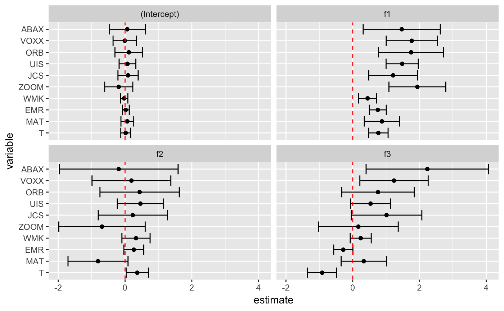

Tidy summarizes information about the components of a model. A model component might be a single term in a regression, a single hypothesis, a cluster, or a class. Exactly what tidy considers to be a model component varies cross models but is usually self-evident. If a model has several distinct types of components, you will need to specify which components to return.
# S3 method for gmm tidy(x, conf.int = FALSE, conf.level = 0.95, exponentiate = FALSE, quick = FALSE, ...)
| x | A |
|---|---|
| conf.int | Logical indicating whether or not to include a confidence
interval in the tidied output. Defaults to |
| conf.level | The confidence level to use for the confidence interval
if |
| exponentiate | Logical indicating whether or not to exponentiate the
the coefficient estimates. This is typical for logistic and multinomial
regressions, but a bad idea if there is no log or logit link. Defaults
to |
| quick | Logical indiciating if the only the |
| ... | Additional arguments. Not used. Needed to match generic
signature only. Cautionary note: Misspelled arguments will be
absorbed in |
A tibble::tibble() with one row for each term in the
regression. The tibble has columns:
The name of the regression term.
The estimated value of the regression term.
The standard error of the regression term.
The value of a statistic, almost always a T-statistic, to use in a hypothesis that the regression term is non-zero.
The two-sided p-value associated with the observed statistic.
The low end of a confidence interval for the regression
term. Included only if conf.int = TRUE.
The high end of a confidence interval for the regression
term. Included only if conf.int = TRUE.
Other gmm tidiers: glance.gmm
if (requireNamespace("gmm", quietly = TRUE)) { library(gmm) # examples come from the "gmm" package ## CAPM test with GMM data(Finance) r <- Finance[1:300, 1:10] rm <- Finance[1:300, "rm"] rf <- Finance[1:300, "rf"] z <- as.matrix(r-rf) t <- nrow(z) zm <- rm-rf h <- matrix(zm, t, 1) res <- gmm(z ~ zm, x = h) # tidy result tidy(res) tidy(res, conf.int = TRUE) tidy(res, conf.int = TRUE, conf.level = .99) # coefficient plot library(ggplot2) library(dplyr) tidy(res, conf.int = TRUE) %>% mutate(variable = reorder(variable, estimate)) %>% ggplot(aes(estimate, variable)) + geom_point() + geom_errorbarh(aes(xmin = conf.low, xmax = conf.high)) + facet_wrap(~ term) + geom_vline(xintercept = 0, color = "red", lty = 2) # from a function instead of a matrix g <- function(theta, x) { e <- x[,2:11] - theta[1] - (x[,1] - theta[1]) %*% matrix(theta[2:11], 1, 10) gmat <- cbind(e, e*c(x[,1])) return(gmat) } x <- as.matrix(cbind(rm, r)) res_black <- gmm(g, x = x, t0 = rep(0, 11)) tidy(res_black) tidy(res_black, conf.int = TRUE) ## APT test with Fama-French factors and GMM f1 <- zm f2 <- Finance[1:300, "hml"] - rf f3 <- Finance[1:300, "smb"] - rf h <- cbind(f1, f2, f3) res2 <- gmm(z ~ f1 + f2 + f3, x = h) td2 <- tidy(res2, conf.int = TRUE) td2 # coefficient plot td2 %>% mutate(variable = reorder(variable, estimate)) %>% ggplot(aes(estimate, variable)) + geom_point() + geom_errorbarh(aes(xmin = conf.low, xmax = conf.high)) + facet_wrap(~ term) + geom_vline(xintercept = 0, color = "red", lty = 2) }#> #>#> #> #>